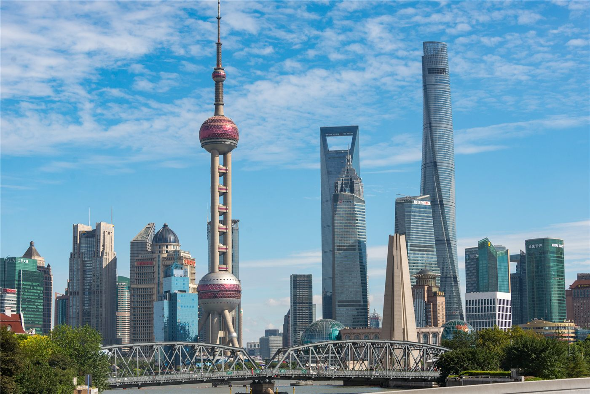

‘공급망 박람회’ 공개일 첫날 인파… 산업 연결의 場
중국에서 열린 공급망 박람회(链博会)가 일반 공개일 첫날부터 많은 관람객으로 붐볐다. 원자재부터 완제품까지 산업의 연결고리를 한자리에 모아 보여주는 자리로 주목받았다.
손승종 기자 · 2026.06.27
橋중국

공급망 박람회의 공개일 첫날 인기가 ‘만점’이었다고 인민망이 전했다. 산업 사슬 전반을 주제로 한 전시에 일반 관람객의 관심이 몰렸다.
광고 문의 · 300×250공급망 박람회는 개별 제품이 아니라 ‘만들어지는 과정 전체’를 보여주는 데 초점을 둔다. 원자재·부품·물류·완제품이 어떻게 연결되는지를 한눈에 보여주는 방식이다.
글로벌 공급망이 재편되는 시기에, 이런 전시는 기업 간 협력과 신규 거래의 기회를 만든다. 일반 공개일에 관람객이 몰린 것은 산업에 대한 대중적 관심을 보여준다.
華橋時報는 산업 행사 소식을 경제 흐름의 신호로 읽는다. 어떤 분야가 주목받고 어떤 연결이 강조되는지는 경제의 방향을 가늠하는 단서가 된다.
공급망은 무역으로 먹고사는 화인 사회와 직결된 주제다. 거래 기회와 산업 트렌드를 살피는 데 유용한 정보다.